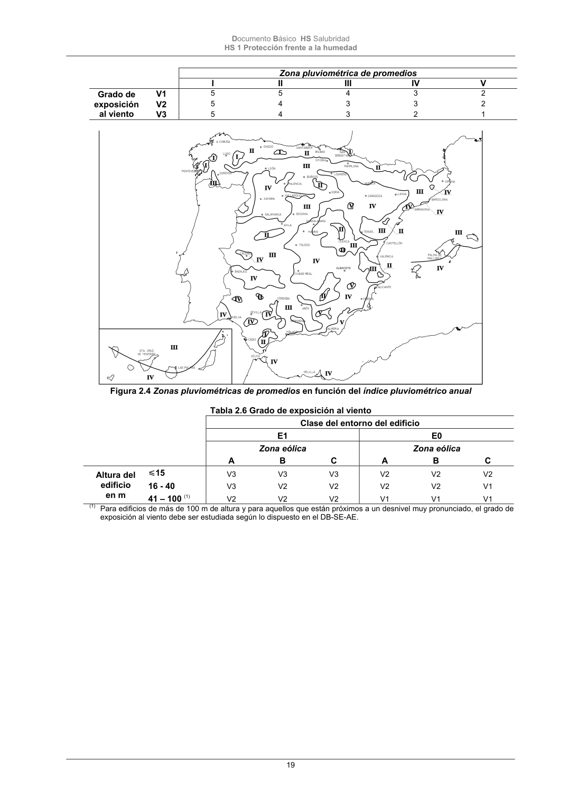

DB-HS · Fragmento de PDF p19 · versión 2022-06-14 · capa oficial
Formatos: JSON compacto · Markdown · PDF fuente
Ámbito del documento · texto del ámbito · documento y tablas
ID técnico a0046 · PDF pág. 19 · jerarquía no validada por persona · no es capítulo: sin_linea_de_encabezado · padre: raíz · literal original en el contenido: «Zona pluviométrica de promedios I»
Zona pluviométrica de promedios I I

PDF fuente redistribuible: copia fiel enlazada en esta página (SHA256 verificado).